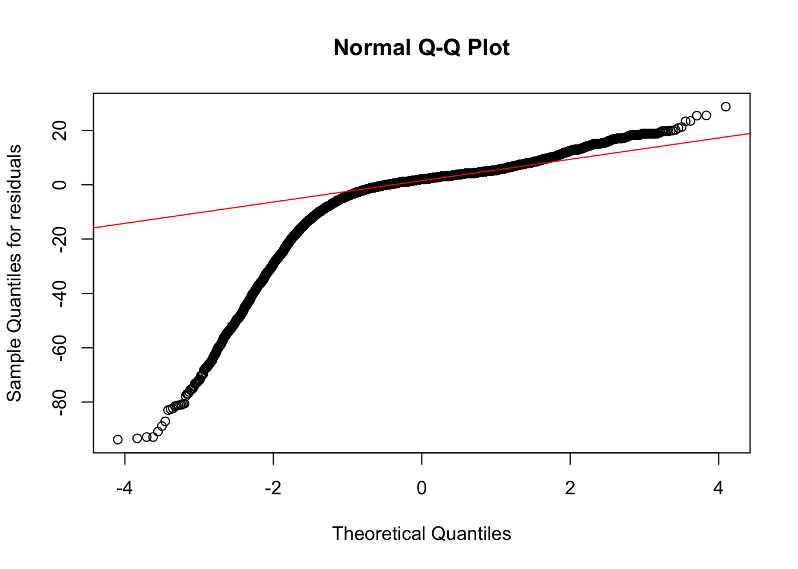
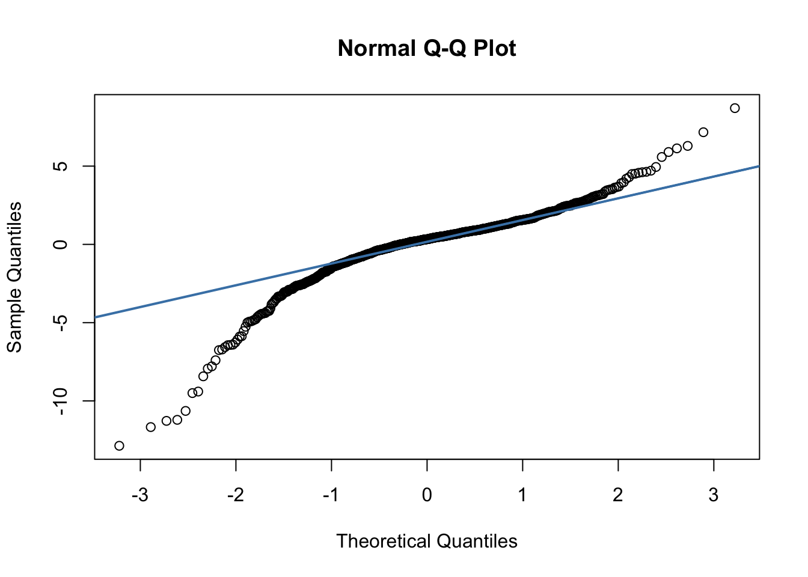
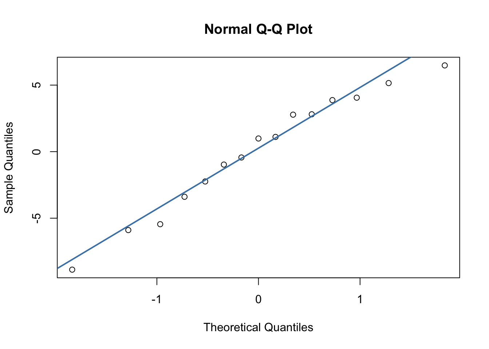
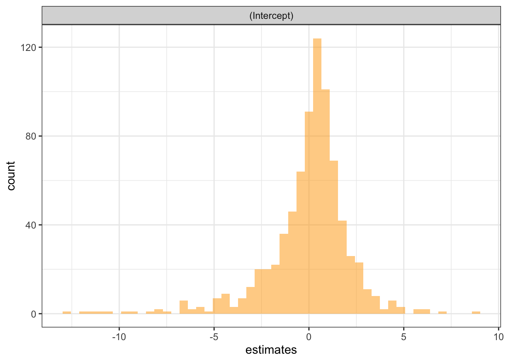
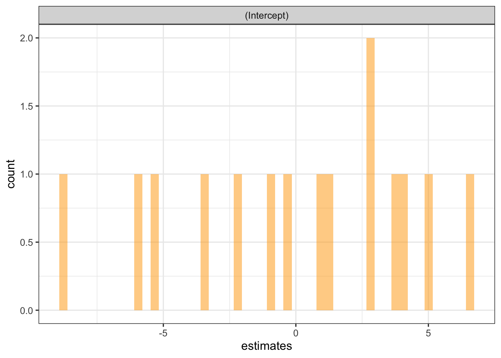
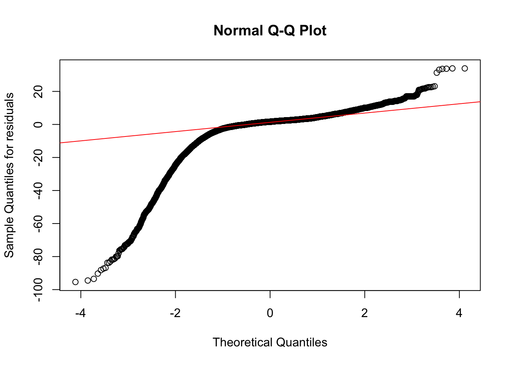
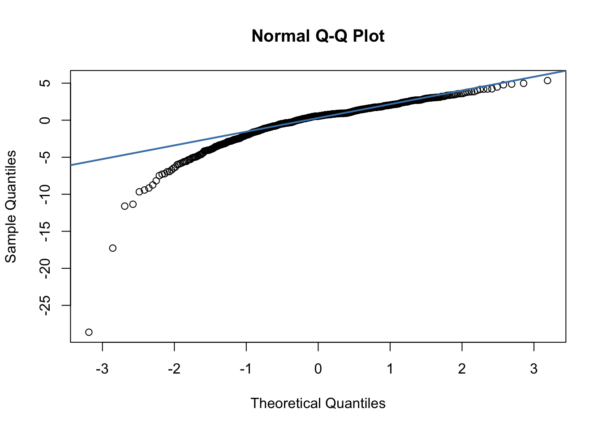
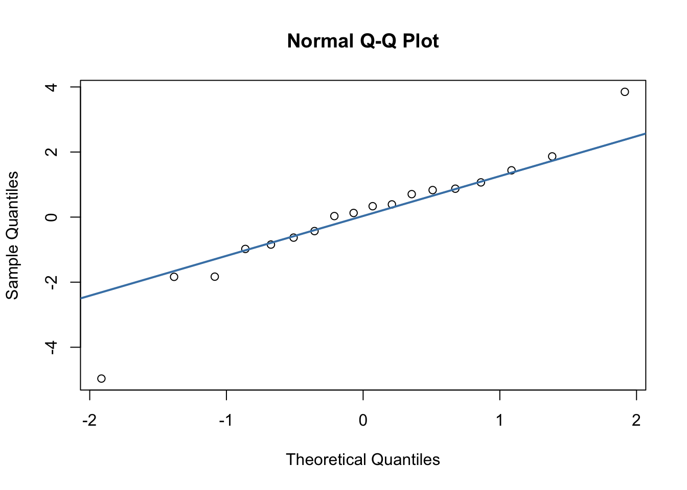
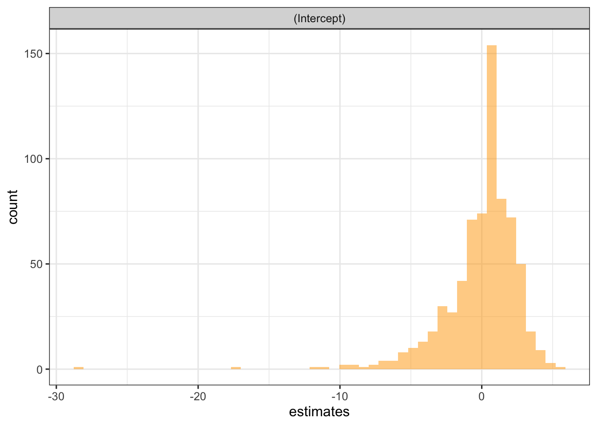
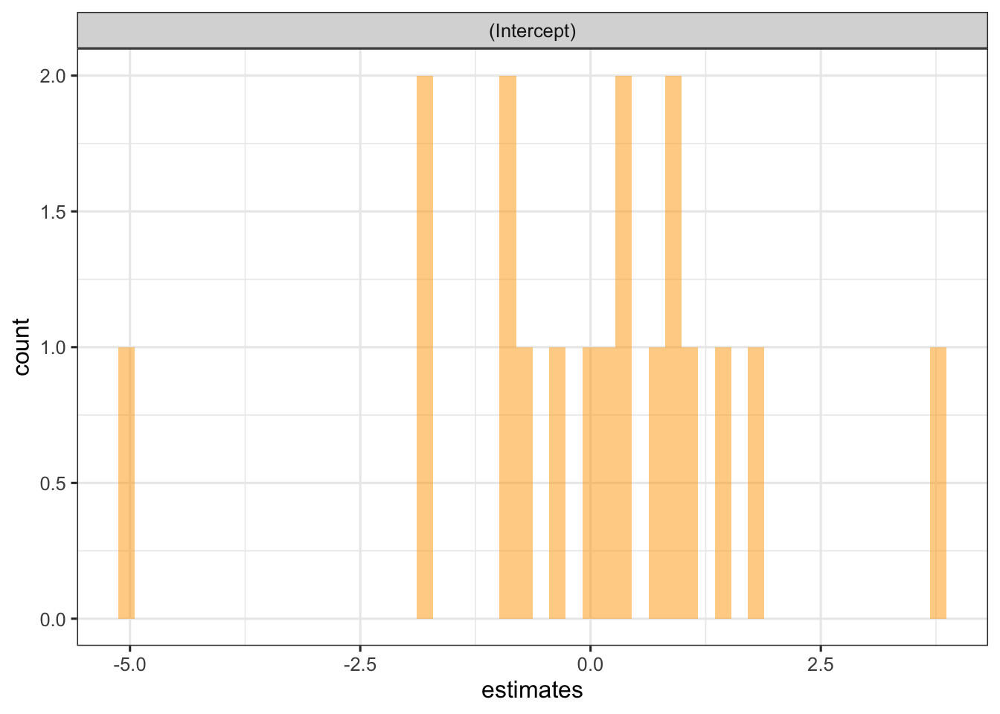

Warning: package 'tidyr' was built under R version 4.3.2
library(tinytex)
Warning: package 'tinytex' was built under R version 4.3.3
library(PupillometryR)
Warning: package 'rlang' was built under R version 4.3.3
library(DT)library(lme4)
Warning: package 'lme4' was built under R version 4.3.3
library(moments) # for skewness() function#library(MCMCglmm)#library(brms)#library(geepack)library(car)#library(knitr)#library(kableExtra)#library(table1)library(readr)library(dplyr)#library(sf)library(tigris)
Warning: package 'tigris' was built under R version 4.3.2
knitr::opts_knit$set(root.dir =here())knitr::opts_chunk$set(warning =FALSE, message =FALSE)theme_set(theme_bw(base_size =12)) # Use black/white theme and increase font size for all ggplot figures
Data cleaning
## load datasetvaccine <-read_csv("data/vaccine.csv")vaccine <-read_csv(here("data","vaccine.csv"))## clean dtasetvaccine_dat <- vaccine %>%# recode vaccination coverage rates with -1 as missingmutate(overall_recode =ifelse(overall ==-1, NA, overall),mmr_recode =ifelse(mmr ==-1, NA, mmr)) %>%# recode missing or 2017 school year as 2017-2018 (as per dataset description)mutate(year_recode =case_when( year =="null"~"2017-18", year =="2017"~"2017-18",TRUE~ year)) %>%# recode school type into public and private schoolsmutate(type_recode =case_when( type =="BOCES"| type =="Kindergarten"| type =="Public"~"Public", type =="Charter"| type =="Nonpublic"| type =="Private"~"Private",TRUE~ type)) %>%# create state spending per pupil variable (in US$1million) --> stops the lmer() warning about different scalesmutate(spend_person =round(statespending2016/schagepop2016/1000, 2)) %>%# replicate Nhat's data cleaning for county namemutate(county =case_when( county =="State Of Illinois"~NA_character_, county =="BLAINE"~"Blaine", county =="ADA"~"Ada", county =="#N/A"~NA_character_, county =="Oklahoma/Tulsa"~"Oklahoma", county =="Walwroth"~"Walworth", county =="adams"~"Adams", county =="Colorado BOCS"~"Denver", county =="New Hampshire"~NA_character_,TRUE~ county)) %>%# standardize with uppercasemutate(county =toupper(county)) %>%mutate(state =toupper(state)) %>%# create variable for whether the state has county-level datamutate(has_county =if_else(!is.na(county), 1, 0)) %>%# create unique school idarrange(state, county, city, name) %>%mutate(school_id =row_number())## create MMR datasetvaccine_mmr <- vaccine_dat %>%filter(!is.na(mmr_recode)) %>%## log transformation for negative skew#mutate(log_mmr = log(mmr_recode)) %>%#mutate(sqrt_mmr = sqrt(max(mmr_recode+1) - mmr_recode)) %>%mutate(log10_mmr =log10(max(mmr_recode+1) - mmr_recode)) #%>% #this one works best#mutate(inverse_mmr = 1/(max(mmr_recode+1) - mmr_recode))## create overall vaccination datasetvaccine_overall <- vaccine_dat %>%filter(!is.na(overall_recode)) %>%## log transformation for negative skew#mutate(log_overall = log(overall_recode)) %>%#mutate(sqrt_overall = sqrt(max(overall_recode+1) - overall_recode)) %>%mutate(log10_overall =log10(max(overall_recode+1) - overall_recode)) #%>% #this one works best#mutate(inverse_overall = 1/(max(overall_recode+1) - overall_recode))## resource for data transformations for skewness: https://www.datanovia.com/en/lessons/transform-data-to-normal-distribution-in-r/
Examine skewness
Fit Linear Mixed Effects model: Overall vaccination rates
## 1b. fit linear regression model with log-transformed responselr_log <-lm(log10_overall ~ spend_person + year_recode, data = vaccine_overall)summary(lr_log)
Call:
lm(formula = log10_overall ~ spend_person + year_recode, data = vaccine_overall)
Residuals:
Min 1Q Median 3Q Max
-0.8852 -0.2512 0.0442 0.2660 1.3905
Coefficients:
Estimate Std. Error t value Pr(>|t|)
(Intercept) 1.039053 0.014329 72.51 <0.0000000000000002 ***
spend_person -0.021640 0.001112 -19.45 <0.0000000000000002 ***
year_recode2018-19 -0.084799 0.006778 -12.51 <0.0000000000000002 ***
---
Signif. codes: 0 '***' 0.001 '**' 0.01 '*' 0.05 '.' 0.1 ' ' 1
Residual standard error: 0.4184 on 26231 degrees of freedom
Multiple R-squared: 0.01564, Adjusted R-squared: 0.01557
F-statistic: 208.4 on 2 and 26231 DF, p-value: < 0.00000000000000022
# check normality of residuals#qqnorm(residuals(lr_log), ylab="Sample Quantiles for residuals")#qqline(residuals(lr_log), col="red")
Fit linear mixed effects model with random intercept for county and state (three-level model)
\[
E(Y_{ijk}|b^{(3)}_{k},b^{(2)}_{jk}) = \beta_{1} + \beta_{2}\text{State spending}_k + \beta_{3}\text{School year}_i + {b}^{(3)}_k\ + {b}^{(2)}_{jk}\
\] where Y is vaccination rate (Overall and MMR) for ith school in jth county and kth state (continuous), State spending is in US dollars per student of the kth state (continuous), School year of the ith school (categorical, with 2017-18 as reference category), \({b}_k\) is the random effect of the kth state (level 3), \({b}_jk\) is the random effect for the jth county in the kth (level 2).
# check normality of residuals --> very skewed#qqnorm(residuals(lmm3), ylab="Sample Quantiles for residuals")#qqline(residuals(lmm3), col="red")##** spend_person is no longer significant **
## 2b. fit 3-level LMM model excluding schools with missing countyvac_overall_county <- vaccine_overall %>%filter(has_county==1)lmm3county <-lmer(overall_recode ~ spend_person + year_recode + (1| state) + (1| county),data = vac_overall_county)#options(scipen=999)summary(lmm3county)
Linear mixed model fit by REML ['lmerMod']
Formula: overall_recode ~ spend_person + year_recode + (1 | state) + (1 |
county)
Data: vac_overall_county
REML criterion at convergence: 176063.3
Scaled residuals:
Min 1Q Median 3Q Max
-9.7300 -0.1194 0.2080 0.4303 2.9813
Random effects:
Groups Name Variance Std.Dev.
county (Intercept) 9.786 3.128
state (Intercept) 23.467 4.844
Residual 92.955 9.641
Number of obs: 23781, groups: county, 781; state, 15
Fixed effects:
Estimate Std. Error t value
(Intercept) 84.7422 5.0809 16.678
spend_person 0.3911 0.4146 0.943
year_recode2018-19 2.9833 2.8644 1.042
Correlation of Fixed Effects:
(Intr) spnd_p
spend_persn -0.877
yr_r2018-19 -0.506 0.111
# check residuals --> very skewed#qqnorm(residuals(lmm2), ylab="Sample Quantiles for residuals")#qqline(residuals(lmm2), col="red")
## 3b. fit 2-level LMM model with log-transformed responselmm2log <-lmer(log10_overall ~ spend_person + (1| state), data = vaccine_overall, REML =TRUE, na.action = na.exclude)summary(lmm2log)
Linear mixed model fit by REML ['lmerMod']
Formula: log10_overall ~ spend_person + (1 | state)
Data: vaccine_overall
REML criterion at convergence: 22951.8
Scaled residuals:
Min 1Q Median 3Q Max
-2.9696 -0.5796 0.0136 0.5643 4.2016
Random effects:
Groups Name Variance Std.Dev.
state (Intercept) 0.0464 0.2154
Residual 0.1399 0.3740
Number of obs: 26234, groups: state, 17
Fixed effects:
Estimate Std. Error t value
(Intercept) 0.97253 0.18013 5.399
spend_person -0.01904 0.01667 -1.142
Correlation of Fixed Effects:
(Intr)
spend_persn -0.957
Fit linear mixed effects model with random intercept for county and state (three-level model) with covariate state electoral college (Barret’s part)
\[
E(Y_{ijk}|b^{(3)}_{k},b^{(2)}_{jk}) = \beta_{1} + \beta_{2}\text{State spending}_k + \beta_{3}\text{School year}_i + \beta_{4}\text{State electoral college}_k + {b}^{(3)}_k\ + {b}^{(2)}_{jk}\ +\epsilon_{jk}
\] where Y is vaccination rate (Overall and MMR) for ith school in jth county and kth state (rate), State spending is in US dollars per student of the kth state (continuous), School year of the ith school (categorical, with 2017-18 as reference category), State electoral college of the kth state is a categorical variable (Democrat, Republican, swing state), \({b}_k\) is the random effect of the kth state (level 3), \({b}_jk\) is the random effect for the jth county in the kth (level 2).
Compare three-level and two-level models using AIC and BIC
## used this resource: https://stackoverflow.com/questions/70642232/how-to-extract-information-criterions-from-lme4lmer-model-fitted-by-ml-and-c## extract AIC and BIC from two-level modelinfo_crit2 <-data.frame("AIC"=AIC(lmm2),"BIC"=BIC(lmm2)) %>%mutate(Model ="Two-level")## extract AIC and BIC from three-level modelinfo_crit_table <-data.frame("AIC"=AIC(lmm3),"BIC"=BIC(lmm3)) %>%mutate(Model ="Three-level") %>%# add values from two-level modelrbind(info_crit2)info_crit_table
##** Do we need to check stage-one residuals (Cholesky decomposition)? We are not looking at repeated observations among schools. **# obtain standardized stage-one residuals (school-level)#condmean <- predict(lmm3) # obtain conditional means#y <- vaccine_overall$overall_recode#stg1r <- y - condmean#estsigma2 <- sigma(lmm3)^2#estsigmamat <- estsigma2 * diag(dim(vaccine_overall)[1])#L <- chol(estsigmamat) # this take a long time#stg1rstar <- solve(L) %*% stg1r#head(stg1rstar)## compare raw stage-one residuals and standardized residuals#rtype <- c(rep("Raw", length(stg1r)), rep("Standardized", length(stg1r)))#resid <- c(stg1r, stg1rstar)#stg1resids <- as.data.frame(cbind(rtype, as.numeric(resid)))# create plot#ggplot(stg1resids, aes(x = resid, fill = rtype)) +# geom_histogram(position = "identity", alpha = 0.5, bins = 50) +# labs(y = "Count", x = "Residuals", fill = "Type")## QQ Plot of standardized residuals## Plot standardized residuals against predicted mean
## check normality of residualsqqnorm(residuals(lmm3), ylab="Sample Quantiles for residuals")qqline(residuals(lmm3), col="red")

## Normal qqplot of the random effects: county-level random effectsbjkhat <-ranef(lmm3, condVar =TRUE)$county %>%pull()qqnorm(bjkhat, pch =1)qqline(bjkhat, col ="steelblue", lwd =2)

##** skewed on the left **
## Normal qqplot of the random effects: state-level random effectsbkhat <-ranef(lmm3, condVar =TRUE)$state %>%pull()qqnorm(bkhat, pch =1)qqline(bkhat, col ="steelblue", lwd =2)

##** looks fairly normal **
## Histogram of county random effects residualsranef(lmm3)$county %>%pivot_longer(cols =c("(Intercept)"),names_to ="ranefs",values_to ="estimates") %>%ggplot(aes(x = estimates)) +geom_histogram(position ="identity", alpha =0.5, bins =50, fill ="orange") +facet_grid(~ ranefs)

##** looks fairly normally distributed **
## Histogram of state random effects residualsranef(lmm3)$state %>%pivot_longer(cols =c("(Intercept)"),names_to ="ranefs",values_to ="estimates") %>%ggplot(aes(x = estimates)) +geom_histogram(position ="identity", alpha =0.5, bins =50, fill ="orange") +facet_grid(~ ranefs)

##** looks acceptable **
Intra-class clustering
## used this resource: https://stackoverflow.com/questions/8526681/extract-random-effect-variances-from-lme4-mer-model-object## extract random effects variancesre_variance <-as.data.frame(VarCorr(lmm3))# create vector for county random effect variancere_var_county <- re_variance %>%filter(grp=="county") %>%select(vcov) %>%pull()# create vector for state random effect variancere_var_state <- re_variance %>%filter(grp=="state") %>%select(vcov) %>%pull()# create vector for error term variancere_var_resid <- re_variance %>%filter(grp=="Residual") %>%select(vcov) %>%pull()## correlation between two schools in different counties but within the same statecorr_state <- re_var_state / (re_var_resid + re_var_state + re_var_county)corr_state
[1] 0.1859401
## correlation between two schools in the same county within the same statecorr_county_state <- (re_var_county + re_var_state) / (re_var_resid + re_var_state + re_var_county)corr_county_state
[1] 0.2634769
## correlation between two schools in different counties = 0
Fit Linear Mixed Effects model: MMR vaccination rates
Examine skewness
Fit base model (marginal mean response)
## 5b. fit linear regression model with log-transformed responselr_mmr_log <-lm(log10_mmr ~ spend_person + year_recode, data = vaccine_mmr)summary(lr_mmr_log)
Call:
lm(formula = log10_mmr ~ spend_person + year_recode, data = vaccine_mmr)
Residuals:
Min 1Q Median 3Q Max
-0.75848 -0.28166 -0.03387 0.22765 1.59474
Coefficients:
Estimate Std. Error t value Pr(>|t|)
(Intercept) 0.9215057 0.0110525 83.375 <0.0000000000000002 ***
spend_person -0.0276791 0.0007803 -35.470 <0.0000000000000002 ***
year_recode2018-19 -0.0069121 0.0054295 -1.273 0.203
---
Signif. codes: 0 '***' 0.001 '**' 0.01 '*' 0.05 '.' 0.1 ' ' 1
Residual standard error: 0.4077 on 28321 degrees of freedom
Multiple R-squared: 0.04932, Adjusted R-squared: 0.04925
F-statistic: 734.6 on 2 and 28321 DF, p-value: < 0.00000000000000022
# check normality of residuals#qqnorm(residuals(lr_mmr_log), ylab="Sample Quantiles for residuals")#qqline(residuals(lr_mmr_log), col="red")
Fit linear mixed effects model with random intercept for county and state (three-level model)
# check residuals --> very skewed#qqnorm(residuals(lmm2mmr), ylab="Sample Quantiles for residuals")#qqline(residuals(lmm2mmr), col="red")
## 7b. fit 2-level LMM model with log-transformed responselmm2mmrlog <-lmer(log10_mmr ~ spend_person + (1| state), data = vaccine_mmr, REML =TRUE, na.action = na.exclude)summary(lmm2mmrlog)
Linear mixed model fit by REML ['lmerMod']
Formula: log10_mmr ~ spend_person + (1 | state)
Data: vaccine_mmr
REML criterion at convergence: 25870.8
Scaled residuals:
Min 1Q Median 3Q Max
-2.3443 -0.7118 -0.0759 0.5269 4.1787
Random effects:
Groups Name Variance Std.Dev.
state (Intercept) 0.0382 0.1955
Residual 0.1453 0.3812
Number of obs: 28324, groups: state, 21
Fixed effects:
Estimate Std. Error t value
(Intercept) 0.90569 0.14796 6.121
spend_person -0.02394 0.01299 -1.843
Correlation of Fixed Effects:
(Intr)
spend_persn -0.957
Compare three-level and two-level models using AIC and BIC
## used this resource: https://stackoverflow.com/questions/70642232/how-to-extract-information-criterions-from-lme4lmer-model-fitted-by-ml-and-c## extract AIC and BIC from two-level modelinfo_crit_mmr2 <-data.frame("AIC"=AIC(lmm2mmr),"BIC"=BIC(lmm2mmr)) %>%mutate(Model ="Two-level")## extract AIC and BIC from three-level modelinfo_crit_table_mmr <-data.frame("AIC"=AIC(lmm3mmr),"BIC"=BIC(lmm3mmr)) %>%mutate(Model ="Three-level") %>%# add values from two-level modelrbind(info_crit_mmr2)info_crit_table_mmr
## check normality of residualsqqnorm(residuals(lmm3mmr), ylab="Sample Quantiles for residuals")qqline(residuals(lmm3mmr), col="red")

##** skewed on the left **
## Normal qqplot of the random effects: county-level random effectsbjkhat <-ranef(lmm3mmr, condVar =TRUE)$county %>%pull()qqnorm(bjkhat, pch =1)qqline(bjkhat, col ="steelblue", lwd =2)

##** slightly skewed on the left **
## Normal qqplot of the random effects: state-level random effectsbkhat <-ranef(lmm3mmr, condVar =TRUE)$state %>%pull()qqnorm(bkhat, pch =1)qqline(bkhat, col ="steelblue", lwd =2)

##** looks fairly normal with single outliers at left and right **
## Histogram of county random effects residualsranef(lmm3mmr)$county %>%pivot_longer(cols =c("(Intercept)"),names_to ="ranefs",values_to ="estimates") %>%ggplot(aes(x = estimates)) +geom_histogram(position ="identity", alpha =0.5, bins =50, fill ="orange") +facet_grid(~ ranefs)

##** looks fairly normally distributed around 0 with long left tail **
## Histogram of state random effects residualsranef(lmm3mmr)$state %>%pivot_longer(cols =c("(Intercept)"),names_to ="ranefs",values_to ="estimates") %>%ggplot(aes(x = estimates)) +geom_histogram(position ="identity", alpha =0.5, bins =50, fill ="orange") +facet_grid(~ ranefs)

##** looks acceptable **
Intra-class clustering
## used this resource: https://stackoverflow.com/questions/8526681/extract-random-effect-variances-from-lme4-mer-model-object## extract random effects variancesre_variance <-as.data.frame(VarCorr(lmm3mmr))# create vector for county random effect variancere_var_county <- re_variance %>%filter(grp=="county") %>%select(vcov) %>%pull()# create vector for state random effect variancere_var_state <- re_variance %>%filter(grp=="state") %>%select(vcov) %>%pull()# create vector for error term variancere_var_resid <- re_variance %>%filter(grp=="Residual") %>%select(vcov) %>%pull()## correlation between two schools in different counties but within the same statecorr_state_mmr <- re_var_state / (re_var_resid + re_var_state + re_var_county)corr_state_mmr
[1] 0.04681278
## correlation between two schools in the same county within the same statecorr_county_state_mmr <- (re_var_county + re_var_state) / (re_var_resid + re_var_state + re_var_county)corr_county_state_mmr
[1] 0.1846592
## correlation between two schools in different counties = 0